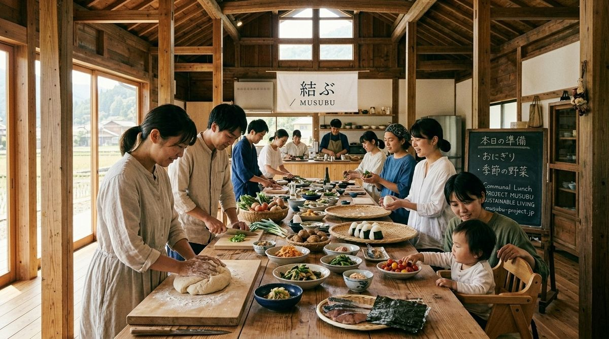
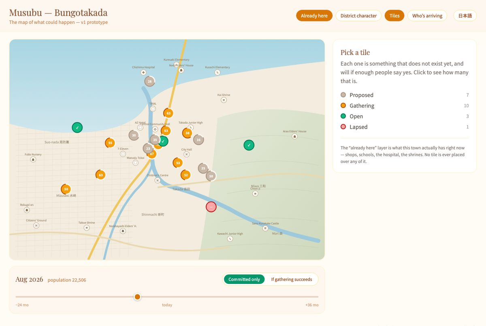

Musubu, in eight pieces.
The concept, the research, the mechanics, the portal, the poll, the policy and the money are one interlocking thing, and that is what makes it hard to introduce. This page takes it apart into eight pieces, leads each one with the best thing in it, and points deeper. Read the pieces in order or jump to the one you doubt.
ABOUT TWENTY MINUTES · NOTHING HERE EXISTS YET · EVERY FIGURE IS ILLUSTRATIVE
Musubu is a way for people to move to Japan's emptying towns together instead of alone: a town says what it is short of, people commit conditionally, the count is public, and nobody moves unless enough others do.
In one minuteAsk people whether they would live somewhere quieter with more time and a house they could afford, and many say yes. Almost nobody goes, because a town you have never lived in is a guess, and so is everyone else's willingness. Musubu makes both legible. A town declares what it wants to become, in phases. People pledge conditionally, with a deposit that comes back if the phase does not fill. The count is public, so you can see who else is going before you decide, and nobody is ever the first one alone. When a phase clears, everyone arrives in the same season, and the next phase opens. Underneath it is a national poll of what actually stops people, which is the map policy gets written against. Nothing is built. It is an open concept, and anyone may take it.
The line that says it best, in the author's wordsNot just where people are in life, but what they are willing to take a chance on if they knew other people in a similar phase were going. They just don't have an option they can take a chance on.Wai, September 2026
PIECE 1 · THE PROBLEMTokyo versus a question mark
Japan already knows its towns are emptying, so that is not the problem. The problem is that Tokyo is the only option with a shape you can picture. There are around 1,700 municipalities and you cannot tell, from outside, which one has work you could do, which one is quietly emptying, or whether you would be the only new person there for ten years. A town nobody can evaluate is not an option. It is a guess, and people are right to refuse a guess.
And it goes one step further. Other people are illegible too. Nobody in Kawasaki can see that four thousand others in the same position would go. Each reads the air, sees nobody moving, and concludes they are alone. They are not alone. They are uncounted.
- Deeper
- The concept page, five minutes, in the author's voice.
01_Foundation/musubu_transition_thesis.md·01_Foundation/musubu_coordination_theory.md§1 (本音 and 建前, and why the count is a mirror).
PIECE 2 · WHO WOULD ACTUALLY GOPeople move when their life is already moving
Wanting rural life is not a trait some people have. It is a state most people pass through. A first child, a breakup, burnout, a job ending, kids leaving home, retirement. At those moments the costs of moving are already being paid for other reasons, and a serious relocation decision is on the table for a few months. Knowing when someone is matters more than knowing who they are, and a slice of the country passes through a hinge every year.
What is on offer to them is the one thing you cannot buy anywhere: arriving somewhere at the same time as everyone else. The last time most adults joined a group where nobody was already inside was university, and people describe those years as the most friendship-dense of their lives. The mechanism was not youth. Nobody was already inside.

- Deeper
- You are 23. There is a third option. The twenties door, with the money in full and what is worse at the same size as what is better.
01_Foundation/musubu_life_stage_doors.md·01_Foundation/musubu_transition_thesis.md(the four social engines) ·01_Foundation/musubu_time_revolution.md.
PIECE 3 · THE MECHANISMA conditional pledge, then phases that cascade
- A town says what it is short of. Two teachers. Six people who will learn a building trade. Families with young children, and here is the housing held for them.
- People commit conditionally. I will go if thirty others go. A deposit is held. Nothing happens yet.
- The number is public. You watch it move and see roughly who else is in.
- You meet before you move. Months of it.
- It fills, or it does not. If it fills, everyone goes in the same season. If not, the money goes back.
That is the seed. What makes it a living thing is phases. A threshold on its own is a call-out for a teacher, honest and inert. A phase is a threshold with two more facts attached: what has to clear before it, and what it opens when it clears. Put the phases in order and the town's plan becomes a graph a stranger can see themselves in.
| Phase | Opens when | What it opens | State |
|---|---|---|---|
| 1 · First cohort | 12 households, 6 with children under ten; 2 teaching posts; 12 houses held | Everything below | cleared March |
| 2 · Kindergarten | 15 children under six committed | The 2019 building reopens next April | 11 of 15 |
| 3 · Clinic co-op | 4 of 6 roles claimed, 30 households | Three-day clinic; pediatric post becomes fundable | 3 of 6 roles |
| 4 · After-school | Kindergarten open one year, 20 school-age children | Cram-school slot; bus route extends | not open |
| 5 · Second cohort | Phase 3 cleared | A second housing cluster opens for pledges | not open |
Illustrative. A family district in a town of five thousand. A pediatrician reading this knows her post exists when phase 3 clears. A couple with a four-year-old know they are one of the fifteen.
- Deeper
- The mechanisms, drawn, seven figures.
02_Platform/musubu_living_system.md(phases, unlocks, day one) ·02_Platform/musubu_mechanics_registry.md(36 mechanics, each labelled proven, precedent, testable or sketch) ·02_Platform/musubu_coordination_architecture.md.
PIECE 4 · THE PORTALAn instrument a town and its arrivals assemble together
The portal is not a website about a town. It is the town's plan, its counts, its calendar and its record, on one surface, in three views: what a visitor sees, what a resident sees, what the office sees. Every number carries where it came from. Lapsed thresholds stay. Closed businesses stay. Only people who live there post.
The part that could only be attempted now is that nobody has to type. A town office can shape its signal by talking.
Clerk, TuesdayThe kindergarten. We closed it in 2019. We would take it back if there were enough children. Fifteen under six, say. The building is fine.
PortalI can put that on the page as a phase: opens when fifteen children under six are committed, the 2019 site, no renovation. Zero of fifteen now. A family in Kawasaki would read it as "nine more households with young children and the kindergarten reopens the April after you arrive." Do you want the assembly to confirm before it goes public?
ClerkAssembly. Put it on Thursday's agenda.
Speech becomes a proposal. A person decides. The record changes once, and is read three ways. The system proposes, people choose, every proposal shows its reasoning.

- Deeper
- Musubu, five years in, the share house at 49 of 56 and the town's instrument panel.
- A town page · A member's dashboard · Bungotakada 2032, one version of it going well, failures included.
02_Platform/musubu_portal_taxonomy.md·02_Platform/musubu_portal_feed_spec.md·02_Platform/musubu_map_spec.md.
PIECE 5 · THE POLLA mirror, not a survey
Every ministry in Japan has heard that people would consider leaving Tokyo. Nobody holds a ranked, refreshed map of what precisely stops them, by life stage and by place. Policy is written against blockers, not desires. That map is the by-product that might be worth more than the platform.
- You say what would actually stop youIn your own words, not eight checkboxes somebody else wrote. Open answers can now be read at national scale.
- It becomes a numberRanked, segmented, anonymous. "412 people in your situation named this same wall."
- Somebody removes oneA childcare place, a bus after seven, a building converted, a subsidy condition loosened.
- The option appears on the screenWith a count and a deadline. And the person who named the blocker watches it move.
- Deeper
- The poll, as a page.
06_Surveys_and_Outreach/musubu_demand_test.md·06_Surveys_and_Outreach/musubu_living_profile.md(the standing register) ·06_Surveys_and_Outreach/musubu_intake_instrument.mdand its Japanese draft.
PIECE 6 · THE EVIDENCEJapan has already run most of the experiment
- Placement worksThe 地域おこし協力隊 programme places people in rural towns, and roughly eight in ten stay in the region. Around half report the reality did not match what they were told. Placement works. Matching is what is broken.
- Group moves existJapan has moved three hundred households together, with a legal framework and a subsidy, every time a volcano erupted. It has never done it voluntarily, for opportunity.
- Why policy failedThe most-cited explanation for a decade of 地方創生 is that an adaptive problem was treated as a technical one: subsidies and buildings instead of how people live together. Systems thinking ranks a subsidy as the weakest lever and information flow several rungs higher. This pulls the higher lever.
- 結 with a ledgerふれあい切符, a time-credit system for elder care, ran at national scale for thirty years. It was hollowed out when a state cash channel arrived in 2000, which is a design lesson as much as a precedent.
- Broad listeningAn AI-clustered manifesto built from open citizen input won a Tokyo governor candidate 150,000 votes in 2024 and his party a Diet seat in 2025. Asking properly at national scale is no longer hypothetical in Japan.
- Nobody assembles peopleEvery relocation platform in Japan lists houses. None of them assembles people, because coordination needs demand-side liquidity a listing site cannot accumulate.
Every figure above is tiered in the claims register by what it rests on. The ones that carry the most argument are the ones marked for verification first.
- Deeper
05_Government_and_Policy/musubu_precedent_research.md·01_Foundation/musubu_coordination_theory.md§6, §9, §10 ·CLAIMS_REGISTER.md.
PIECE 7 · THE MONEY, AND THE NETWORKWho pays, and what sits above one town
Towns already hold revitalization budget and spend it on brochures and individual grants with poor retention. The national relocation grant is up to ¥1,000,000 per household and moved about 3,500 households in a year across the whole country, which is two per municipality. Concentration is the entire point. The cheapest thing a town or a prefecture could buy is a first cohort's refund bonus: a small thank-you to forty people who committed and did not move, in exchange for the most precise demand data it has ever held.
Above one town there is a network. An index of towns with live counts, so a person can compare which one is closest to becoming real. A cross-town project feed: "I did not choose the town, I chose the boatyard, and the town came with it." And circulating cohorts: one town teaches carpentry and turns empty houses into places to live; another has a renovation project and calls for twelve recently reskilled people for nine months, housing included. Each new town raises the value of every existing one.

- Deeper
- Choose your size: the Kunisaki cluster, towns held at chosen sizes, transfer instead of rupture.
03_Economics/(seven documents) ·05_Government_and_Policy/musubu_government_alignment.md·08_Pitch/musubu_fukuoka_pitch.md(how it would earn).
PIECE 8 · WHAT IS NOT KNOWNThe real ones, and the invitation
- LanguageThe author does not speak Japanese well enough to run a municipal conversation. Almost every next step needs Japanese fluency or presence in Japan.
- UntestedNobody has been asked to conditionally commit to anything. Not one respondent.
- NumbersSeveral figures used confidently turned out to be estimates. They are now labelled as such.
- MoneyWho pays for coordination is answerable on paper and unanswered in practice.
- MechanicsHolding and releasing deposits across households, employers and a municipality is regulated, and nobody has examined it.
- ResidentsThe people already living in a town have no surface in any prototype yet. They are the party with the veto.
Sixty-eight open questions are listed, each tagged by what would close it. Twenty-six are decisions someone could make today. Ten need a Japanese speaker. Four need a lawyer. Eleven cannot move until something is running.